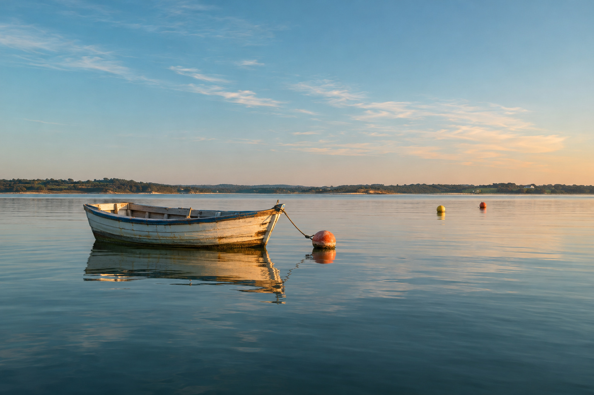
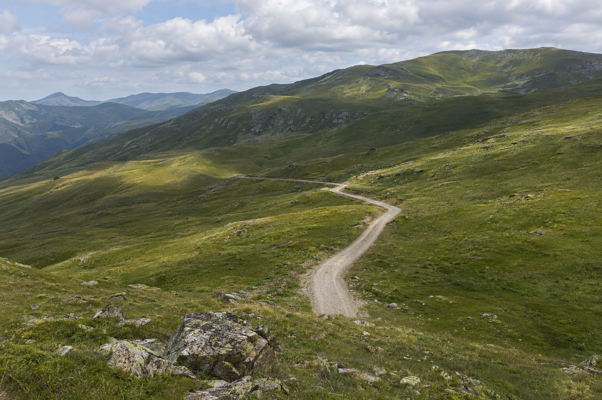
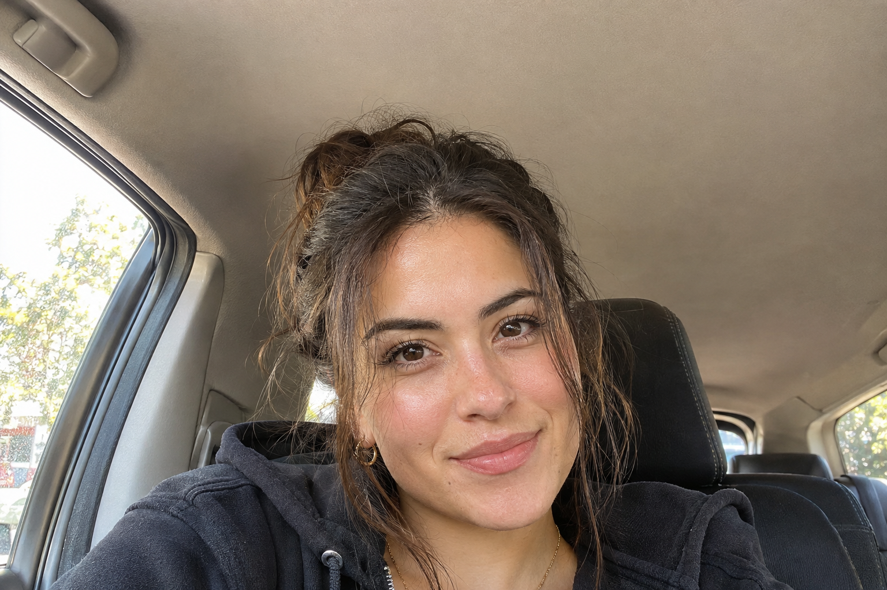
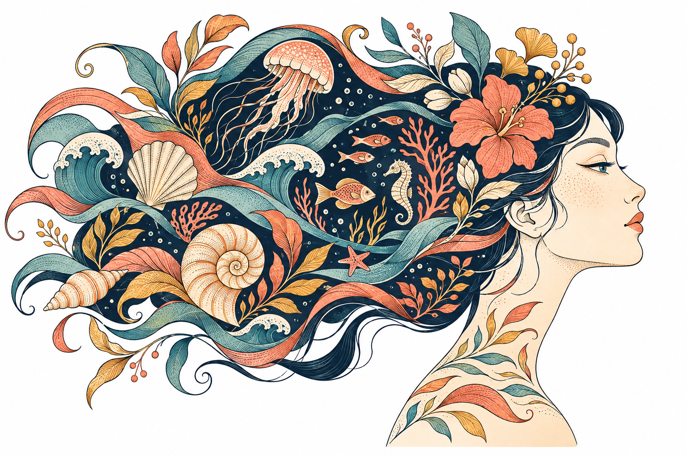
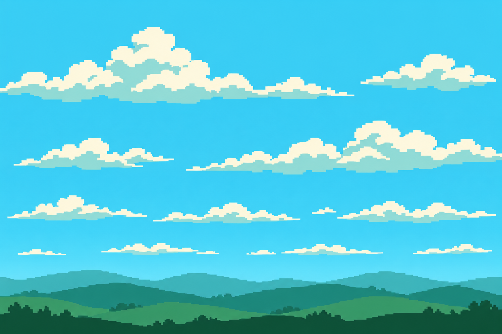
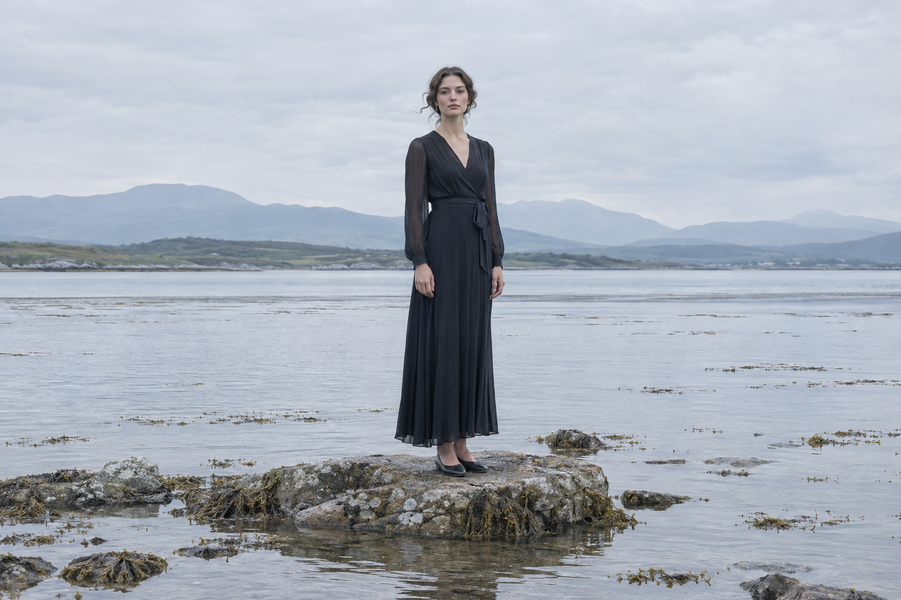

Meet Images 2.6
OpenAI introduced Images 2.6 today, see for yourself how it's performing.
View the galleryThe images
Examples were made with Sunburst 2.6 on High quality, using references and custom skill systems, on API connection.





